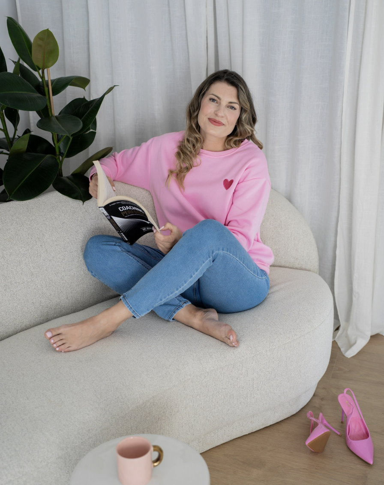

You keep performing a version of yourself you don't fully recognise anymore.
Welcome to your SHERO Journey
Lead from who YOU
Lead from who YOU
are.
Transformative leadership coaching for the woman ready to reclaim her power and lead with authentic presence.

My message to you.
In this video I guide you through the WHAT, the HOW and most importantly the WHY. After watching this, you are able to make the first step closer to your true self of leadership and decision making.


The Shero Movement
I founded Shero with a simple yet profound realization: the corporate world doesn't need more "toughness"—it needs more wholeness.
As your coach, I don't give you a roadmap to someone else's success. I help you find the inner compass that's been there all along. We bridge the gap between soulful intention and strategic impact.
"Where the invisible becomes seen, the impossible becomes comfortable."
I've been stuck between who I thought I had to be — and who I actually was.
I have been part of the corporate world over 15 years, in a leading position over 7 years at American Express Global Business Travel. I know what it feels like to perform a version of yourself that slowly stops fitting — to carry a role, a marriage, a life that looked right from the outside and felt wrong on the inside.
After 13 years of marriage and two kids, I made the decision that changed everything. Not because it was easy. Because it was the only right one left. Today I work with women at exactly these crossroads. Not to hand them my answers. But to help them find their own — clearly, without burning out, without waiting another year for permission.
That's what SHERO is. Not just a brand. A decision you make about yourself.
Claudia Wolter
Founder & CEO Shero
The Decision — 1:1 Coaching
You need a decision.
Mostly it's not a lack of information. It's a lack of space — and the right questions — to finally hear yourself clearly. That's what the coaching is for. You are in the right place if…
You've tried figuring it out alone. The loop keeps coming back.
You don't want to be told what to do — you want to finally trust yourself to decide.
You're done waiting for the right moment. You know the right moment is now.
Our Pathways
High-Energy Strategy
Tailored containers for growth, designed for the unique challenges of high-level leadership.
Executive Coaching
One-on-one deep dives into leadership identity, presence, and navigating complex corporate ecosystems with grace.
- check_circle Narrative Architecture
- check_circle Emotional Intelligence
- check_circle Presence & Power
Strategic Mentorship
Combining soulful wisdom with pragmatic strategy for female founders and emerging C-suite leaders.
- check_circle Business Soul-Alignment
- check_circle Growth Strategy
- check_circle Sustainable Personal Development
Shero Community
A curated collective of visionary women. Masterminds, retreats, and deep-connection networking.
- check_circle Upcoming Masterminds
- check_circle Digital Community Channels
- check_circle Peer Ecosystem
Voices of Transformation
"Claudia has an uncanny ability to see the things you've been hiding from yourself. Working with her didn't just change my career; it changed how I show up in every room I enter."
Elena Richards
Global Director, Tech Innovations
"The Shero movement is exactly what the modern leadership landscape is missing. Soul, depth, and unapologetic power. Claudia is a modern oracle for the corporate world."
Sarah Jenkins
Founder, Bloom Agency
What you perhaps ask yourself
Is this therapy?
No. Coaching is future-focused — we work on decisions, clarity,
and moving forward. If deeper therapeutic work comes up, I'll
tell you honestly and can point you to the right support.
Leadership track or Relationship track — how does that work?
Sometimes both. During our Discovery Call, we figure out
together what's most relevant for you right now. The coaching
adapts to where you actually are — not a fixed script.
What's your coaching philosophy?
I don't tell you what to do. I ask the questions that help you
stop leading from who others think you should be — and start
making decisions from who you actually are.
What's the investment?
We discuss investment in your Discovery Call — no pressure, no
pitch. Book a free call and we'll figure out together if this
is the right fit.
The easiest way
Book a Session.
Let's connect personally. Thirty private minutes, video-first, no preparation expected. Pick a window on the calendar.